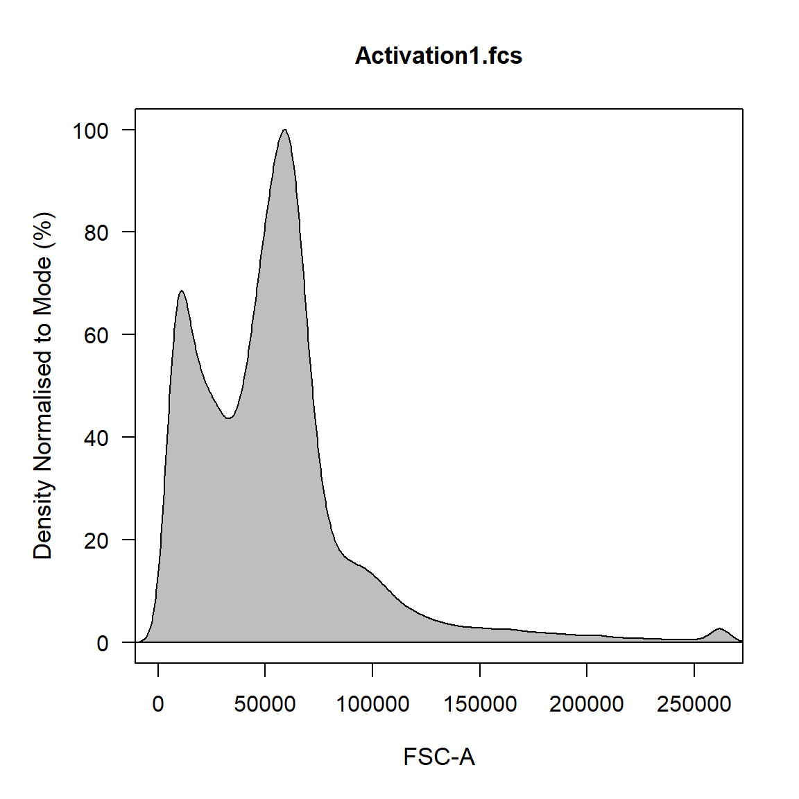
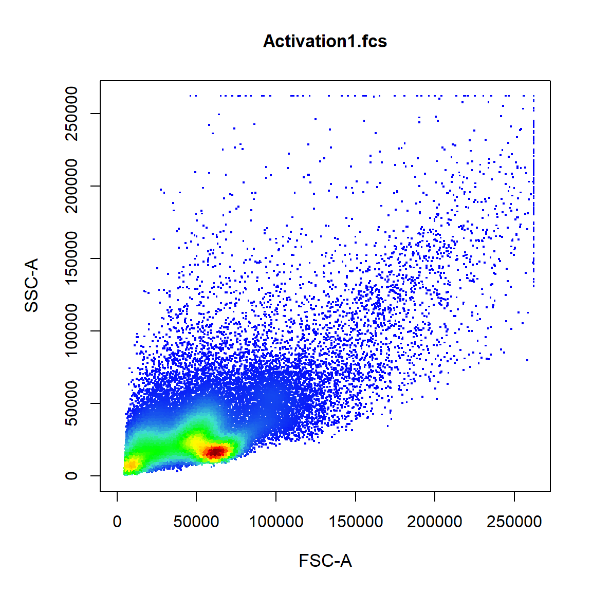
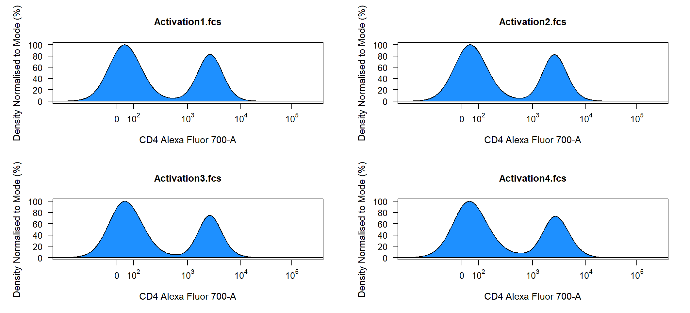
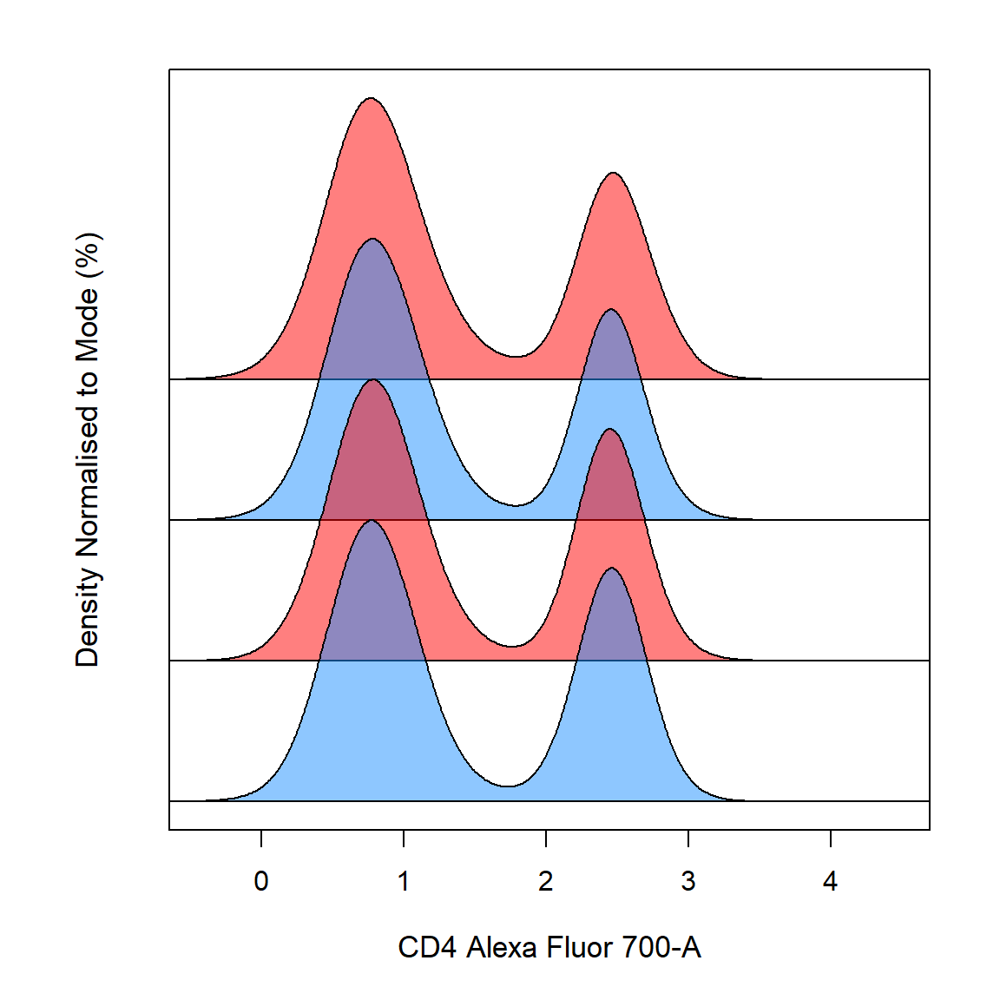
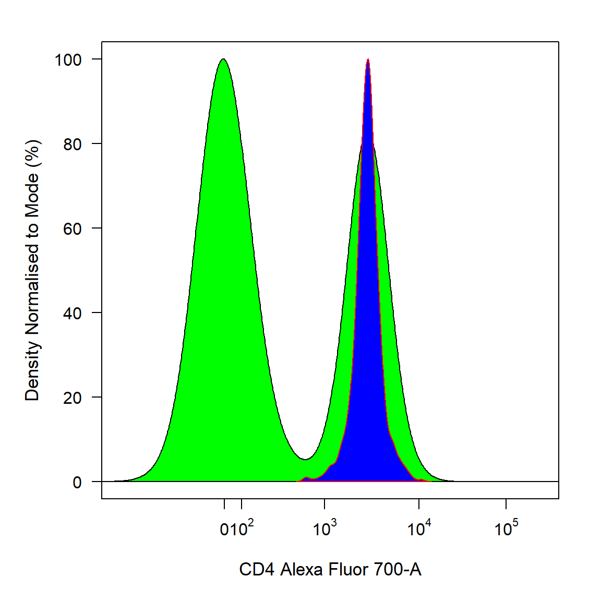
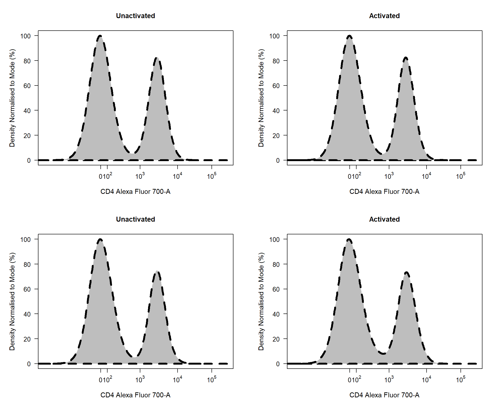
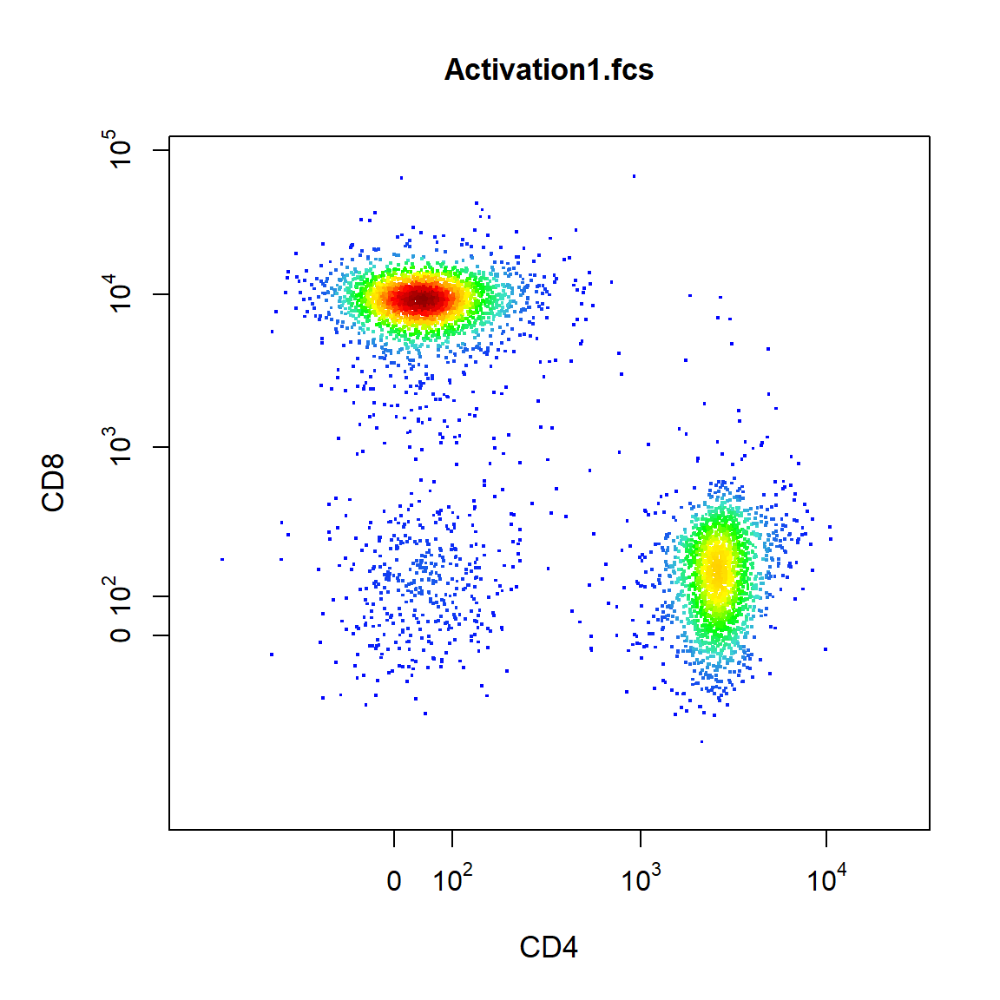
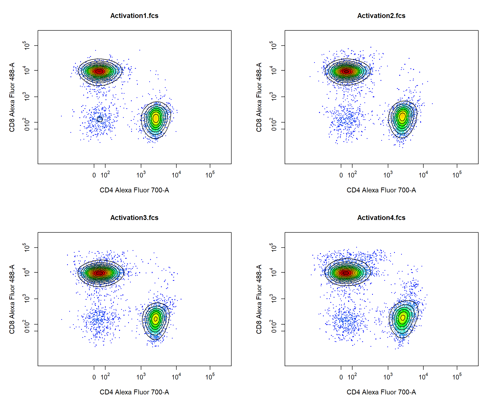
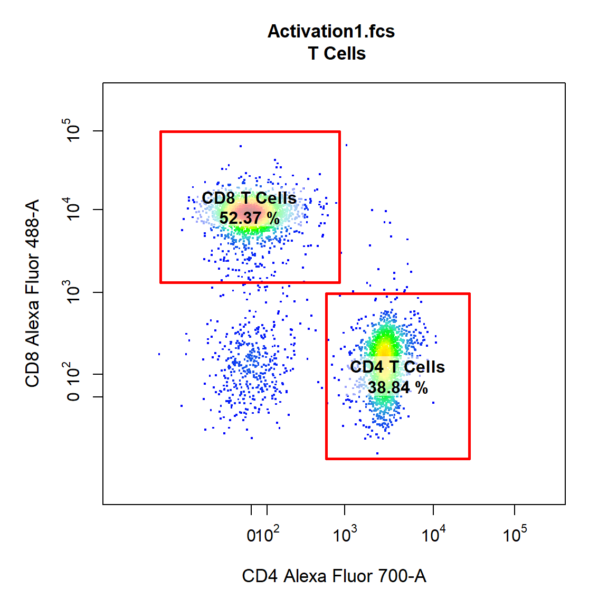
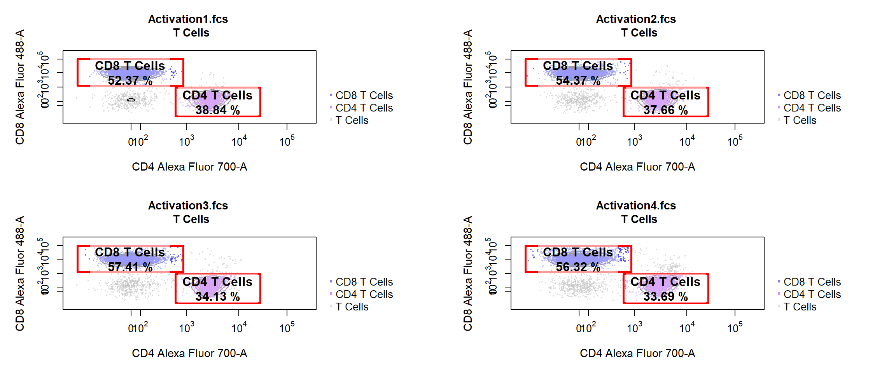

vignettes/CytoRSuite-Visualisation.Rmd
CytoRSuite-Visualisation.RmdCytoRSuite contains an intuitive plotting function built on base graphics called cyto_plot which supports all existing flow cytometry objects including flowFrames, flowSets, GatingHierarchies and GatingSets. Some key plotting features include:
display
group_by
group_by
overlay
rectangleGate, polygonGate, ellipsoidGate and filters objects.gate_line_type, gate_line_width and gate_line_col.label_text and label_stat.label_box_x and label_box_y
legend
density_stack
density_modal
gate and density_stack
density_fill, density_fill_alpha, density_line_type, density_line_width and density_line_col.contour_lines
contour_line_type, contour_line_width and contour_line_col
point_col, point_alpha, point_shape andpoint_size.layout
popup
cyto_plot_gating_scheme
cyto_plot_profiles
png() to export high resolution imagescyto_plot is used internally throughout CytoRSuite so any cyto_plot arguments can be passed to functions which generate plots, including gate_draw and gate_edit
Here we aim to document some of the key features of cyto_plot for visualisation of flow cytometry data. To accomplish this goal we will use the Activation dataset supplied with CytoRSuiteData.
# Load Required Packages
library(CytoRSuite)
library(CytoRSuiteData)
# Prepare Data
fs <- Activation
# Add Marker Names
chnls <- c("Alexa Fluor 405-A","Alexa Fluor 430-A","APC-Cy7-A", "PE-A", "Alexa Fluor 488-A", "Alexa Fluor 700-A", "Alexa Fluor 647-A", "7-AAD-A")
markers <- c("Hoechst-405", "Hoechst-430", "CD11c", "Va2", "CD8", "CD4", "CD44", "CD69")
names(markers) <- chnls
markernames(fs) <- markers
# Add fs to GatingSet
gs <- GatingSet(fs)
# Apply Compensation
gs <- compensate(gs, fs[[1]]@description$SPILL)
# Transform Fluorescent Channels
channels <- cyto_fluor_channels(gs)
trans <- estimateLogicle(gs[[1]], channels)
gs <- transform(gs, trans)
# Apply Saved Gates
gating(Activation_gatingTemplate,gs)
# Pull out T Cells Population
TCells <- getData(gs, "T Cells")cyto_plot OverviewAt its most basic level, cyto_plot constructs either a 1-D or 2-D plot based on the number of channels supplied to the channels argument. To construct the plot in a pop-up window simply set the popup argument to TRUE. Note: for larger plots users will need to expand the plotting area to avoid figure margins errors.
If a single channel is supplied a 1-D density distribution is plotted. All density distributions are normalised to the mode by default by this can be changed by setting density_modal to FALSE.

If two channels are supplied a 2-D scatterplot with blue-red colour gradient is constructed.

cyto_plot: 1-Dimensional Density DistributionsTo get 1-D density distributions of the data, simply supply a single channel or marker name to the channels argument.
The density distribution for each flowFrame within the flowSet will be plotted in a separate panel by default. Notice how the x axis in the above plot has limits [0,4] this is due to flowFrame and flowSet objects not retaining the logicle transformation information. To have appropriately labelled axes users should supply a transformList object to the axes_trans argument as shown below. The density_fill argument controls the fill colour for the density distribution.
trans <- estimateLogicle(fs[[2]], channels)
cyto_plot(TCells, channels = "CD4", axes_trans = trans, density_fill = "dodgerblue")## Warning in split.default(res, rep(1:plots, length_out = n, each = layers)):
## data length is not a multiple of split variable
## Warning in split.default(res, rep(1:plots, length_out = n, each = layers)):
## data length is not a multiple of split variable
## Warning in split.default(res, rep(1:plots, length_out = n, each = layers)):
## data length is not a multiple of split variable
## Warning in split.default(res, rep(1:plots, length_out = n, each = layers)):
## data length is not a multiple of split variable
## Warning in split.default(res, rep(1:plots, length_out = n, each = layers)):
## data length is not a multiple of split variable
## Warning in split.default(res, rep(1:plots, length_out = n, each = layers)):
## data length is not a multiple of split variable
## Warning in split.default(res, rep(1:plots, length_out = n, each = layers)):
## data length is not a multiple of split variable
## Warning in split.default(res, rep(1:plots, length_out = n, each = layers)):
## data length is not a multiple of split variable
Stacking of samples is supported through the density_stack argument which controls the percentage overlap of the stacked distributions. The density_fill_alpha argument controls the degree of transparency of the fill colour.
cyto_plot(TCells, channels = "CD4", density_fill = c("dodgerblue", "red"), density_stack = 0.5, density_fill_alpha = 0.5)
To plot objects of class GatingHierarchy supply the name of the parent population to extract for plotting. Population overlays are supported for flowFrame, flowSet, list of flowFrames or list of flowSets using the overlay argument. For GatingHierarchies and GatingSets the name of the population to overlay is also supported. The degree of overlap for overlays can be controlled using the density_stack argument. For 1-D density distribution the density_line_col argument controls the border colour.
cyto_plot(gs[[1]], parent = "T Cells", channels = "CD4", overlay = "CD4 T Cells", density_fill = c("green","blue"), density_line_col = c("black","red"))
To change the border line type user can supply an integer [0,4] to the density_line_type argument. The line width can be controlled in a similar fashion using the density_line_width argument. By default the title above each plot will be the name of the sample but this can be changed by supplying specific names to the title argument.
cyto_plot(gs, parent = "T Cells", channels = "CD4", density_line_type = 2, density_line_width = 4, title = c("Unactivated","Activated"))## Warning in split.default(res, rep(1:plots, length_out = n, each = layers)):
## data length is not a multiple of split variable
## Warning in split.default(res, rep(1:plots, length_out = n, each = layers)):
## data length is not a multiple of split variable
## Warning in split.default(res, rep(1:plots, length_out = n, each = layers)):
## data length is not a multiple of split variable
## Warning in split.default(res, rep(1:plots, length_out = n, each = layers)):
## data length is not a multiple of split variable
## Warning in split.default(res, rep(1:plots, length_out = n, each = layers)):
## data length is not a multiple of split variable
## Warning in split.default(res, rep(1:plots, length_out = n, each = layers)):
## data length is not a multiple of split variable
## Warning in split.default(res, rep(1:plots, length_out = n, each = layers)):
## data length is not a multiple of split variable
## Warning in split.default(res, rep(1:plots, length_out = n, each = layers)):
## data length is not a multiple of split variable
cyto_plot: 2-Dimensional Scatter PlotsTo get 2-D density scatter plots of the data, simply supply two channels or marker names to the channels argument of cyto_plot.
By default 2-D scatter plots will use a blue-red colour scale for points, this can be modified using the point_col argument. To modify axes labels simply supply the desired labels to the xlab and ylab arguments. The axes limits can be modified by supplying the lower and upper limits to the xlim and ylim arguments.
cyto_plot(TCells[[1]], channels = c("CD4","CD8"), axes_trans = trans, xlab = "CD4", ylab = "CD8", xlim = c(-0.5,3.5), ylim = c(-0.5,4))
Contour lines are also supported for 2-D scatter plots, simply supply the number of contours levels to the contour_lines argument. Users can use the contour_line_col and contour_line_width arguments to modify the colour and line width of the contour lines respectively.

cyto_plot also has full support for plotting gates, simply supply the gate object to the gate argument or for GatingHierarchies and GatingSet simply supply the name of the gated population to the alias argument. Users can use the the gate_line_col, gate_line_type and gate_line_width arguments to modify the gate colour, line type or line width.
cyto_plot(gs[[1]], parent = "T Cells", alias = c("CD4 T Cells","CD8 T Cells"), channels = c("CD4","CD8"))
Overlays are also supported in 2-D scatterplots, simply supply the name of the gated population to the overlay. Overlay also accepts the following objects: flowFrames, flowSets, list of flowFrames or list of flowSets which allow overlay of any data. The colour of the overlay is also controlled by the point_col argument, simply supply a colour for the base plot and a colour for each overlay. Here we will set the colour of the base plot to “grey” and the overlay colours to “purple” and “blue”. To include a legend in the plot users can set the legend argument to TRUE. To show the layering used within cyto_plot we have added some contours as well.
cyto_plot(gs, parent = "T Cells", alias = c("CD4 T Cells","CD8 T Cells"), channels = c("CD4","CD8"), contour_lines = 15, overlay = c("CD4 T Cells","CD8 T Cells"), point_col = c("grey","purple", "blue"), point_alpha = 0.5, legend = TRUE)
png("Activation.png", res = 600, height = 5, width = 13, units = "in")
cyto_plot(gs, parent = "T Cells", alias = c("CD4 T Cells","CD8 T Cells"), channels = c("CD4","CD8"), contour_lines = 15, overlay = c("CD4 T Cells","CD8 T Cells"), point_col = c("grey","purple", "blue"), point_alpha = 0.5, legend = TRUE)
dev.off()For more information on these visualisation functions refer to the documentation for these functions in the Reference.